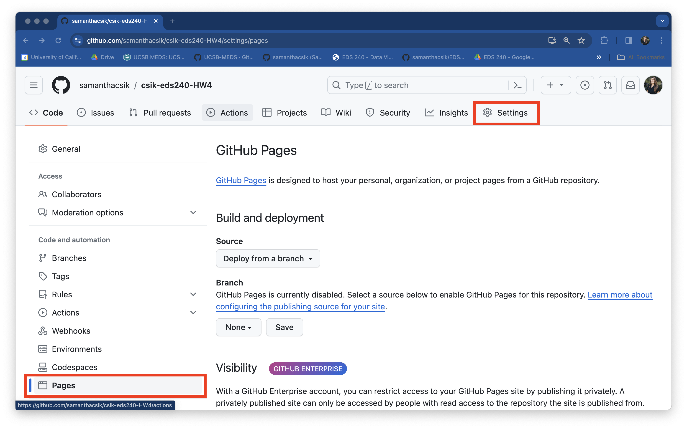
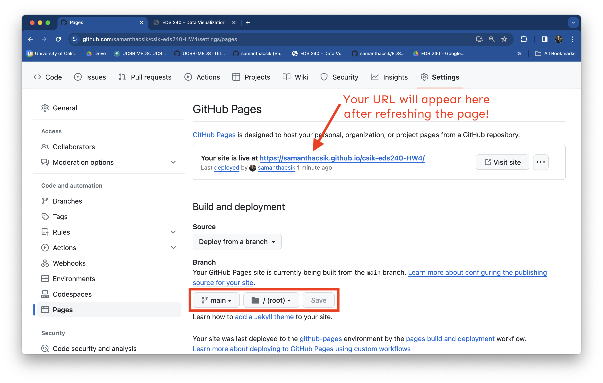
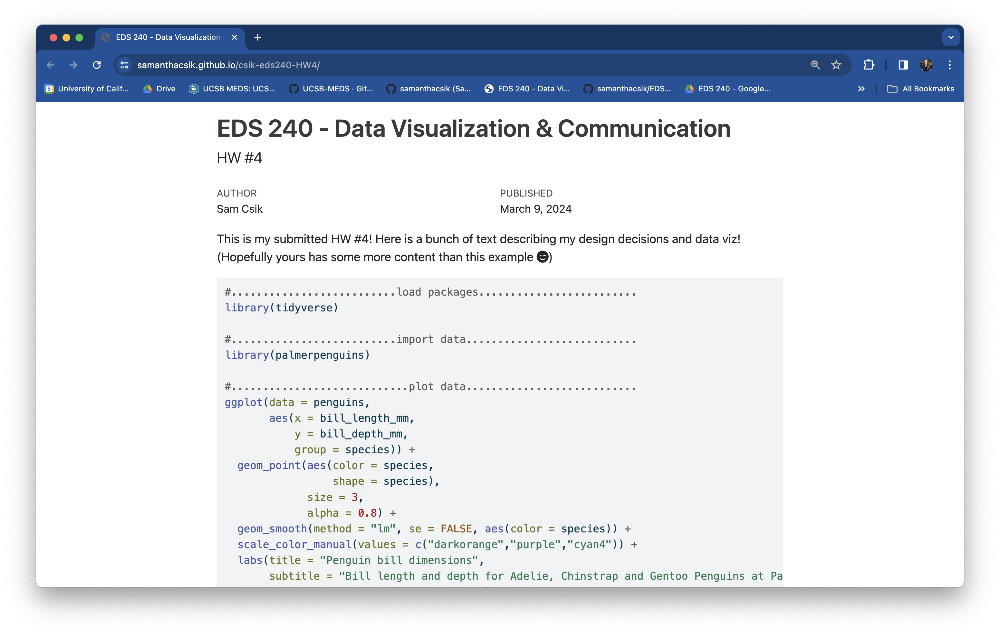

Note
FPM #4 is the the fourth step in working towards your final project, which is meant to combine nearly all of the course learning outcomes. You’ll assemble your final infographic and publish a blog post describing your motivations and design process.
Description
I. Review the final project instructions
Reread the final project description in full (one last time!) to remind yourself of the goals and requirements.
II. Review feedback and plan your revisions
Begin by reviewing the feedback you received on FPM #3 from your instructional team and from your in-lab peer reviews. Make a short plan describing what specific changes you intend to make based on that feedback. Respond to the following in an issue titled, FPM4 - reviewing feedback
III. Refine your data visualizations and assemble your infographic
Continue refining your data visualizations based on feedback, then assemble your infographic using the tool of your choice (e.g. using {ggplot2}, Affinity, Canva, Google Docs/Slides, etc.).
Be sure to revisit the ten design elements listed in the final project description to guide your design choices.
IV. Write your blog post
Share your data design process in a short, 1-2 page (~500-1,000 words) science communication blog post-style write up. Your blog post should be structured as follows:
TODO Storytelling helps to engage your reader
- Un-sung Pollination Hero, by Marina Kochuten (MEDS 2025)
- Forest Restoration Reduces Wildfire Risk and Increases Carbon Storage, by Liv Hemond (MESM 2025)
- Designing an Infographic on Shoreline Armoring and Coastal Resilience, by Lilia Mourier (MESM 2026)
-
- just the output renders and not the code (e.g. using code chunk options
eval: true&echo: false) - warnings and messages are suppressed, as necessary (e.g. using code chunk options
warning: false&message: false); other intermediate products should not be rendered
- just the output renders and not the code (e.g. using code chunk options
-
- print, but not execute (i.e. use code chunk options
eval: false&echo: true) - be appropriately styled (e.g. following tidyverse style guide) and annotated
- print, but not execute (i.e. use code chunk options
You may submit your write-up in one of two ways:
As a blog post on your personal website – check out the Adding a blog to your existing Quarto website materials for a refresher, if needed. Note: If you choose this option, you will need to copy code from your
eds240-infographicrepository into your blog post file within your personal website repository.As a published Quarto document that is deployed using GitHub Pages. Expand the note below for detailed instructions on how to do so:
Instructions for publishing a Quarto doc using GitHub Pages
- Your Quarto doc must be named
index.qmdand live in your repository’s (eds240-infographic) root directory. Be sure to rename / move it, if necessary. - Render
index.qmdand ensure thatindex.htmlappears in your root directory as well (this is the file that will be deployed by GitHub Pages). - Head to your remote repository on GitHub. Navigate to the Settings page (top navbar), then select Pages from the left-hand menu. Once there, you should see something that looks like this:
- Under Build and deployment > Branch, update the drop down that says None to main. Leave the second drop down on /(root) (this tells GitHub to look for and deploy our
index.htmlfile from the root directory of the main branch). Click Save. Your URL will appear at the top of the page once it’s deployed (you will need to refresh the page – this could take a few minutes):


Remember, this is an opportunity to grow your portfolio and showcase both your technical and communication skills (through data viz and writing). The more thought, organization, and care you put into this write-up, the more confident you can be showing this to a potential employer!
Rubric (specifications)
To recieve a “Satisfactory” on FPM #4: